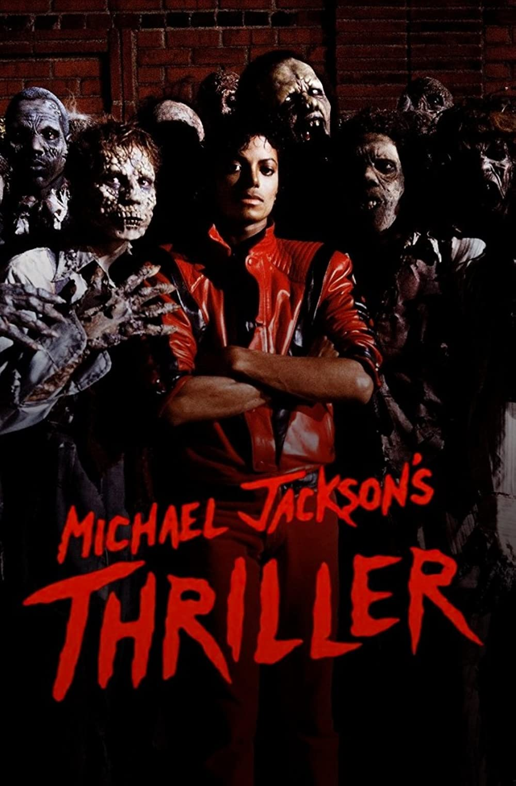

Thriller
 "Thriller" is a song by the American singer Michael Jackson. It was released by Epic Records in the UK on November 5, 1983, and in the US on January 23, 1984, as the seventh and final single from his sixth studio album, Thriller.[2] "Thriller" is a funk song produced by Quincy Jones and written by Rod Temperton, who wanted to write a theatrical song to suit Jackson's love of film. The music and lyrics evoke horror films, with sound effects such as thunder, creaking doors, footsteps, and wind. It ends with a spoken-word sequence performed by the horror actor Vincent Price. "Thriller" received positive reviews and became the album's seventh top-ten single on the Billboard Hot 100, reaching number four. It reached number one in Belgium, France and Spain, and the top ten in many other countries. "Thriller" is certified Diamond by the Recording Industry Association of America. In the week of Jackson's death in 2009, it was Jackson's bestselling track in the US, with sales of 167,000 copies on the Billboard Hot Digital Tracks chart. It charted on the Billboard Hot Digital Singles Chart at number two, and remained in the charts' top ten for three consecutive weeks. It appears on several of Jackson's greatest-hits albums and has been covered by numerous artists. The "Thriller" music video was directed by John Landis and premiered on MTV on December 2, 1983. In the video, Jackson becomes a zombie and performs a dance routine with a horde of the undead. Many elements of the video have had a lasting impact on popular culture, such as the zombie dance and Jackson's red jacket, and it was the first music video inducted into the National Film Registry. It has been named the greatest music video of all time by various publications and readers' polls.[3]